에너지관리기사 (2016-10-01 기출문제)
1과목: 연소공학
1. 기체연료의 일반적인 특징에 대한 설명으로 틀린 것은?
- 화염온도의 상승이 비교적 용이하다.
- 연소 후에 유해성분의 잔류가 거의 없다.
- 연소장치의 온도 및 온도분포의 조절이 어렵다.
- 액체연료에 비해 연소공기비가 적다.
(정답률: 75%)

2. 다음 연료 중 발열량(kcal/kg)이 가장 큰 것은?
- 중유
- 프로판
- 무연탄
- 코크스
(정답률: 83%)
3. 고체연료를 사용하는 어느 열기관의 출력이 3,000kW이고 연료소비율이 매시간 1,400kg일 때, 이 열기관의 열효율은? (단, 고체연료의 중량비는 C=81.5%, H=4.5%, O=8%, S=2%, W=4%이다.)
- 25%
- 28%
- 3%
- 32%
(정답률: 36%)
4. 수소 4kg을 과잉공기계수 1.4의 공기로 완전 연소시킬 때 발생하는 연소가스 중의 산소량은?
- 3.20kg
- 4.48kg
- 6.40kg
- 12.8kg
(정답률: 40%)
5. 연소 시 점화 전에 연소실가스를 몰아내는 환기를 무엇이라 하는가?
- 프리퍼지
- 가압퍼지
- 불착화퍼지
- 포스트퍼지
(정답률: 86%)
6. 연소 배기가스 중의 O2나 CO2 함유량을 측정하는 경제적인 이유로 가장 적당한 것은?
- 연소 배가스량 계산을 위하여
- 공기비를 조절하여 열효율을 높이고 연료소비량을 줄이기 위하여
- 환원염의 판정을 위하여
- 완전 연소가 되는지 확인하기 위하여
(정답률: 90%)
7. 연소가스와 외부공기의 밀도 차에 의해서 생기는 압력 차를 이용하는 통풍 방법은?
- 자연 통풍
- 평행 통풍
- 압입 통풍
- 유인 통풍
(정답률: 88%)
8. 중량비로 C(86%), H(14%)의 조성을 갖는 액체 연료를 매 시간당 100kg 연소시켰을 때 생성되는 연소가스의 조성이 체적비로 CO2(12.5%), O2(3.7%), N2(83.8%)일 때 1시간당 필요한 연소용 공기량은?
- 11.4Sm3
- 1140Sm3
- 13.7Sm3
- 1368Sm3
(정답률: 35%)
9. 기체연료의 연소방법에 해당하는 것은?
- 증발연소
- 표면연소
- 분무연소
- 확산연소
(정답률: 87%)
10. 어떤 중유연소 가열로의 발생가스를 분석했을 때 체적비로 CO2 12.0%, O2 8.0%, N2 80%의 결과를 얻었다. 이 경우 공기비는? (단, 연료 중에는 질소가 포함되어 있지 않다.)
- 1.2
- 1.4
- 1.6
- 1.8
(정답률: 70%)
11. CO2와 연료 중의 탄소분을 알고 있을 때 건연소가스량(G)을 구하는 식은?
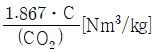
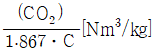
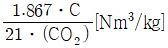
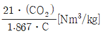
(정답률: 63%)
12. 고체연료의 일반적인 특징에 대한 설명으로 틀린 것은?
- 회분이 많고 발열량이 적다.
- 연소효율이 낮고 고온을 얻기 어렵다.
- 점화 및 소화가 곤란하고 온도조절이 어렵다.
- 완전연소가 가능하고 연료의 품질이 균일하다.
(정답률: 83%)
13. 회염검출기와 가장 거리가 먼 것은?
- 플레임 아이
- 플레임 로드
- 스테빌라이저
- 스택 스위치
(정답률: 83%)
14. 건타입 버너에 대한 설명으로 옳은 것은?
- 연소가 다소 불량하다.
- 비교적 대형이며 구조가 복잡하다.
- 버너에 송풍기가 장치되어 있다.
- 보일러나 열교환기에는 사용할 수 없다.
(정답률: 71%)
15. 석탄 연소 시 발생하는 버드 네스트(Bird Nest) 현상은 주로 어느 전열 면에서 가장 많은 피해를 일으키는가?
- 과열기
- 공기예열기
- 급수예열기
- 화격자
(정답률: 75%)
16. 고체연료의 연소방법 중 미분탄연소의 특징이 아닌 것은?
- 연소실의 공간을 유효하게 이용할 수 있다.
- 부하변동에 대한 응답성이 우수하다.
- 소형의 연소로에 적합하다.
- 낮은 공기비로 높은 연소효율을 얻을 수 있다.
(정답률: 70%)
17. 화염온도를 높이려고 할 때 조작방법으로 틀린 것은?
- 공기를 예열한다.
- 과잉공기를 사용한다.
- 연료를 완전 연소시킨다.
- 노 벽 등의 열손실을 막는다.
(정답률: 83%)
18. 건조공기를 사용하여 수성가스를 연소시킬 때 공기량은? (단, 공기과잉률 : 1.30, CO2 : 4.5%, O2 : 0.2%, CO : 38%, H2 : 52.0%, N2 : 5.3%이다.)
- 4.95Nm3/kg
- 4.27Nm3/kg
- 3.50Nm3/kg
- 2.77Nm3/kg
(정답률: 28%)
19. 과잉공기량이 많을 때 일어나는 현상으로 옳은 것은?
- 배기가스에 의한 열손실이 감소한다.
- 연소실의 온도가 높아진다.
- 연료소비량이 적어진다.
- 불완전연소물의 발생이 적어진다.
(정답률: 54%)
20. 연료 중에 회분이 많을 경우 연소에 미치는 영향으로 옳은 것은?
- 발열량이 증가한다.
- 연소상태가 고르게 된다.
- 클링커의 발생으로 통풍을 방해한다.
- 완전연소되어 잔류물을 남기지 않는다.
(정답률: 86%)
2과목: 열역학
21. 냉동사이클의 성능계수와 동일한 온도 사이에서 작동하는 역 Carnot 사이클의 성능계수가 관계되는 사항으로서 옳은 것은? (단, TH=고온부, TL=저온부의 절대온도이다.)
- 냉동사이클의 성능계수가 역 Carnot 사이클의 성능계수보다 높다.
- 냉동사이클의 성능계수는 냉동사이클에 공급한 일을 냉동효과로 나눈 것이다.
- 역 Carnot 사이클의 성능계수는
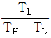
로 표시할 수 있다. - 냉동사이클의 성능계수는
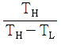
로 표시할 수 있다.
(정답률: 69%)
22. 다음 중 상온에서 비열비 Cp/Cu 값이 가장 큰 기체는?
- He
- O2
- CO2
- CH4
(정답률: 74%)
23. 가역 또는 비가역과 관련된 식으로 옳게 나타낸 것은?
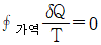
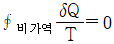
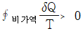
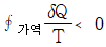
(정답률: 68%)
24. 0℃의 물 1,000kg을 24시간 동안 0℃의 얼음으로 냉각하는 냉동능력은 몇 kW인가? (단, 얼음의 용해열은 335kJ/kg이다.)
- 2.15
- 3.88
- 14
- 14,000
(정답률: 62%)
25. 실린더 내에 있는 온도 300K의 공기 1kg을 등온압축할 때 냉각된 열량 114kJ이다. 공기의 초기 체적이 V라면 최종 체적은 약 얼마가 되는가? (단, 이 과정은 이상기체의 가역과정이며, 공기의 기체상수는 0.287kJ/kgㆍK이다.)
- 0.27V
- 0.38V
- 0.46V
- 0.59V
(정답률: 29%)
26. 액화공정을 나타낸 그래프에서 Ⓐ, Ⓑ, Ⓒ 과정 중 액화가 불가능한 공정을 나타낸 것은?
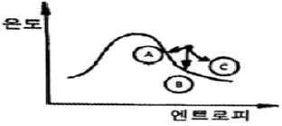
- Ⓐ
- Ⓑ
- Ⓒ
- Ⓐ, Ⓑ, Ⓒ
(정답률: 77%)
27. “일을 열로 바꾸는 것은 용이하고 완전히 되는 데 반하여 열을 일로 바꾸는 것은 그 효율이 절대로 100%가 될 수 없다.”는 말은 어떤 법칙에 해당되는가?
- 열역학 제1법칙
- 열역학 제2법칙
- 줄(Joule)의 법칙
- 푸리에(Fourier)의 법칙
(정답률: 83%)
28. 다음 그림은 어떠한 사이클과 가장 가까운가?
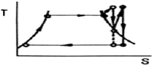
- 디젤(Diesel) 사이클
- 재열(Reheat) 사이클
- 합성(Composite) 사이클
- 재생(Regenerative) 사이클
(정답률: 71%)
29. 이상기체가 정압과정으로 온도가 150℃ 상승하였을 때 엔트로피 변화는 정적과정으로 동일 온도만큼 상승하였을 때 엔트로피 변화의 몇 배인가? (단, K는 비열비이다.)
- 1/K
- K
- 1
- K-1
(정답률: 63%)
30. Carnot 사이클로 작동하는 가역기관이 800℃의 고온열원으로부터 5,000kW의 열을 받고 30℃의 저온열원에 열을 배출할 때 동력은 약 몇 kW인가?
- 440
- 1,600
- 3,590
- 4,560
(정답률: 56%)
31. 1기압 30℃의 물 3kg을 1기압 건포화 증기로 만들려면 약 몇 kJ의 열량을 가하여야 하는가? (단, 30℃와 100℃ 사이의 물의 평균정압비열은 4.19kJ/kgㆍK, 1기압 100℃에서의 증발잠열은 2,257kJ/kg, 1기압 30℃ 물의 엔탈피는 126kJ/kg이다.)
- 4,130
- 5,100
- 6,200
- 7.650
(정답률: 35%)
32. 물체 A와 B가 각각 물체 C와 열평형을 이루었다면 A와 B도 서로 열평형을 이룬다는 열역학 법칙은?
- 제0법칙
- 제1법칙
- 제2법칙
- 제3법칙
(정답률: 75%)
33. 2.4MPa, 450℃인 과열증기를 160kPa가 될 때까지 단열적으로 분출시킬 때, 출구속도는 960m/s 이었다. 속도계수는 얼마인가? (단, 초속은 무시하고 입구와 출구 엔탈피는 각각 h1=3,350kJ/kg, h2=2,692kJ/kg이다.)
- 0.225
- 0.543
- 0.769
- 0.837
(정답률: 36%)
34. 800℃의 고온열원과 20℃의 저온열원 사이에서 작동하는 카르노 사이클의 효율은?
- 0.727
- 0.542
- 0.458
- 0.273
(정답률: 64%)
35. 압력 150kPa, 온도 97℃의 압축공기를 대기 중으로 분출시키는 과정이 가역단열과정이라면 분출속도는 몇 m/s인가? (단, 공기의 비열비는 1.4, 기체상수는 0.287kJ/kgㆍK이며 최초의 속도는 무시한다.)
- 150
- 282
- 320
- 415
(정답률: 48%)
36. 증기의 속도가 빠르고, 입출구 사이의 높이 차도 존재하여 운동에너지 및 위치에너지를 무시할 수 없다고 가정하고, 증기는 이상적인 단열 상태에서 개방시스템 내로 흘러 들어가 단위질량유량당 축일(ws)을 외부로 제공하고 시스템으로부터 흘러나온다고 할 때, 단위질량 유량당 축일을 어떻게 구할 수 있는가? (단, u는 비체적, P는 압력, V는 속도, g는 중력가속도, z는 높이를 나타내며, 하첨자 I는 입구, e는 출구를 나타낸다.)
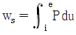
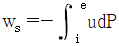
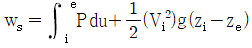
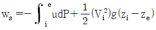
(정답률: 58%)
37. 그림과 같은 T-S 선도를 갖는 사이클은?
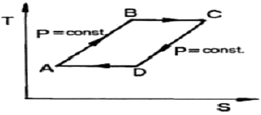
- Brayton 사이클
- Ericsson 사이클
- Carnot 사이클
- Stirling 사이클
(정답률: 55%)
38. 증기압축 냉동사이클에서 응축온도는 동일하고 증발온도가 다음과 같을 때 성능계수가 가장 큰 것은?
- -20℃
- -25℃
- -30℃
- -40℃
(정답률: 67%)
39. 보일러에서 송풍기 입구의 공기가 15℃, 100kPa 상태에서 공기예열기로 매분 500m3가 들어가 일정한 압력하에서 140℃까지 온도가 올라갔을 때 출구에서의 공기유량은 몇 m3/min인가? (단, 이상기체로 가정한다.)
- 617m3/mim
- 717m3/mim
- 817m3/mim
- 917m3/mim
(정답률: 53%)
40. 저발열량 11,000kcal/kg인 연료를 연소시켜서 900kW의 동력을 얻기 위해서는 매분당 약 몇 kg의 연료를 연소시켜야 하는가? (단, 연료는 완전연소되며 발생한 열량의 50%가 동력으로 변환된다고 가정한다.)
- 1.37
- 2.34
- 3.82
- 4.17
(정답률: 57%)
3과목: 계측방법
41. 다음 보기의 특징을 가지는 가스분석계는?
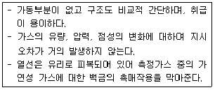
- 연소식 O2계
- 적외선 가스분석계
- 자기식 O2계
- 밀도식 CO2계
(정답률: 68%)
42. 다음 중 피토관(Pitot Tube)의 유속 V(m/sec)를 구하는 식은? (단, Pt : 전압(kg/m2), Ps : 정압(kg/m2), γ : 비중량(kg/m3), g : 중력가속도(m/s2)이다.)
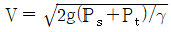
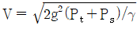
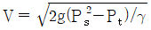
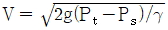
(정답률: 74%)
43. 피드백(Feedback) 제어계에 관한 설명으로 틀린 것은?
- 입력과 출력을 비교하는 장치는 반드시 필요하다.
- 다른 제어계보다 정확도가 증가된다.
- 다른 제어계보다 제어 폭이 감소된다.
- 급수제어에 사용된다.
(정답률: 70%)
44. 개수로에서의 유량은 위어(Weir)로 측정한다. 다음 중 위어(Weir)에 속하지 않는 것은?
- 예봉 위어
- 이각 위어
- 삼각 위어
- 광정 위어
(정답률: 64%)
45. 월트만(Waltman)식과 관련된 설명으로 옳은 것은?
- 전자식 유량계의 일종이다.
- 용적식 유량계 중 박막식이다.
- 유속식 유량계 중 터빈식이다.
- 차압식 유량계 중 노즐식과 벤투리식을 혼합한 것이다.
(정답률: 58%)
46. 하겐 포아젤 방정식의 원리를 이용한 점도계는?
- 낙구식 점도계
- 모세관 점도계
- 회전식 점도계
- 오스트발트 점도계
(정답률: 64%)
47. 다음 중 실제 값이 나머지 3개와 다른 값을 갖는 것은?
- 273.15K
- 0℃
- 460°R
- 32°F
(정답률: 80%)
48. 다음 중 고온의 노 내 온도 측정을 위해 사용되는 온도계로 가장 부적절한 것은?
- 제겔콘(Seger Cone)온도계
- 백금저항온도계
- 방사온도계
- 광고온계
(정답률: 62%)
49. 다음 가스 분석법 중 흡수식인 것은?
- 오르자트법
- 밀도법
- 자기법
- 음향법
(정답률: 77%)
50. 방사온도계의 특징에 대한 설명으로 옳은 것은?
- 방사율에 의한 보정량이 적다.
- 이동물체에 대한 온도측정이 가능하다.
- 저온도에 대한 측정이 적합하다.
- 응답속도가 느리다.
(정답률: 70%)
51. 액주식 압력계에 사용되는 액체의 구비조건으로 틀린 것은?
- 온도변화에 의한 밀도 변화가 커야 한다.
- 액면은 항상 수평이 되어야 한다.
- 점도와 팽창계수가 작아야 한다.
- 모세관 현상이 적어야 한다.
(정답률: 68%)
52. 베르누이 방정식을 적용할 수 있는 가정으로 옳게 나열된 것은?
- 무마찰, 압축성유체, 정상상태
- 비점성유체, 등유속, 비정상상태
- 뉴턴유체, 비압축성유체, 정상상태
- 비점성유체, 비압축성유체, 정상상태
(정답률: 76%)
53. 내경 10cm의 관에 물이 흐를 때 피토관에 의해 측정된 유속이 5m/s이라면 유량은?
- 19kg/s
- 29kg/s
- 39kg/s
- 49kg/s
(정답률: 59%)
54. 가스분석계에 특징에 관한 설명으로 틀린 것은?
- 적정한 시료가스의 채취장치가 필요하다.
- 선택성에 대한 고려가 필요 없다.
- 시료가스의 온도 및 압력의 변화로 측정오차를 유발할 우려가 있다.
- 계기의 교정에는 화학분석에 의해 검정된 표준시료 가스를 이용한다.
(정답률: 79%)
55. 유속 측정을 위해 피토관을 사용하는 경우 양쪽 관 높이의 차(△h)를 측정하여 유속(V)을 구하는데 이 때 V는 △h와 어떤 관계가 있는가?
- △h에 반비례
- △h의 제곱에 반비례
- √△h에 비례
- 1/△h에 비례
(정답률: 75%)
56. 광고온계의 특징에 대한 설명으로 옳은 것은?
- 비접촉식 온도 측정법 중 가장 정도가 높다.
- 넓은 측정온도(0~3,000℃) 범위를 갖는다.
- 측정이 자동적으로 이루어져 개인오차가 발생하지 않는다.
- 방사온도계에 비하여 방사율에 대한 보정량이 크다.
(정답률: 57%)
57. 다음 중 급열, 급랭에 약하며 이중 보호관 외관에 사용되는 비금속 보호관은? (단, 상용온도는 약 1,450℃이다.)
- 자기관
- 유리관
- 석영관
- 내열강
(정답률: 52%)
58. 다음 측정방법 중 화학적 가스분석 방법은?
- 열전도율법
- 도전율법
- 적외선흡수법
- 연소열법
(정답률: 70%)
59. 조리개부가 유선형에 가까운 형상으로 설계되어 축류의 영향을 비교적 적게 받게 하고 조리개에 의한 압력손실을 최대한으로 줄인 조리개 형식의 유량계는?
- 원판(Disc)
- 벤투리(Venturi)
- 노즐(Nozzle)
- 오리피스(Orifice)
(정답률: 66%)
60. 자동제어장치에서 조절계의 입력신호 전송방법에 따른 분류로 가장 거리가 먼 것은?
- 전기식
- 수증기식
- 유압식
- 공기압식
(정답률: 63%)
4과목: 열설비재료 및 관계법규
61. 최고안전사용온도 600℃ 이상의 고온용 무기질 보온재는?
- 펄라이트(Pearlite)
- 폼 유리(Foam Glass)
- 석면
- 규조토
(정답률: 78%)
62. 샤모트질(Chamotte) 벽돌의 주성분은?
- Al2O3, 2SiO2, 2H2O
- Al2O3, 7SiO2, H2O
- FeO, Cr2O3
- MgCO3
(정답률: 70%)
63. 에너지법에서 정의하는 에너지가 아닌 것은?
- 연료
- 열
- 원자력
- 전기
(정답률: 82%)
64. 단열효과에 대한 설명으로 틀린 것은?
- 열확산계수가 작아진다.
- 열전도계수가 작아진다.
- 노 내 온도가 균일하게 유지된다.
- 스폴링 현상을 촉진시킨다.
(정답률: 79%)
65. 에너지이용합리와법에 따라 1년 이하 징역 또는 1천만 원 이하의 벌금기준에 해당하는 자는?
- 검사대상기기의 검사를 받지 아니한 자
- 생산 또는 판매 금지명령을 위반한 자
- 검사대상기기 조종자를 선임하지 아니한 자
- 효율관리기자재에 대한 에너지사용량의 측정결과를 신고하지 아니한 자
(정답률: 64%)
66. 에너지이용합리와법에 따라 에너지다소비사업자가 함은 연료, 열 및 전력의 연간 사용량의 합계가 몇 티오이(TOE) 이상인가?
- 1,000
- 1,500
- 2,000
- 3,000
(정답률: 83%)
67. 보온재, 단열재 및 보랭재 등을 구분하는 기준은?
- 연전도율
- 안전사용온도
- 압력
- 내화도
(정답률: 73%)
68. 용광로에 장입하는 코크스의 역할이 아닌 것은?
- 철광석 중의 황분을 제거
- 가스상태로 선철 중에 흡수
- 선철을 제조하는 데 필요한 열원을 공급
- 연소 시 환원성 가스를 발생시켜 철의 환원을 도모
(정답률: 60%)
69. 에너지이용합리와법에 따라 에너지 사용량이 대통령령이 정하는 기준량 이상이 되는 에너지다소비사업자는 전년도의 분기별 에너지사용량ㆍ제품생산량 등의 사항을 언제까지 신고하여야 하는가?
- 매년 1월 31일
- 매년 3월 31일
- 매년 6월 30일
- 매년 12월 31일
(정답률: 81%)
70. 민간사업 주관자 중 에너지 사용계획을 수립하여 산업통상자원부장관에게 제출하여야 하는 사업자의 기준은?
- 연간 연료 및 열을 2천TOE 이상 사용하거나 전력을 5백만 KWh 이상 사용하는 시설을 설치하고자 하는 자
- 연간 연료 및 열을 3천TOE 이상 사용하거나 전력을 1천만 KWh 이상 사용하는 시설을 설치하고자 하는 자
- 연간 연료 및 열을 5천TOE 이상 사용하거나 전력을 2천만 KWh 이상 사용하는 시설을 설치하고자 하는 자
- 연간 연료 및 열을 1만TOE 이상 사용하거나 전력을 4천만 KWh 이상 사용하는 시설을 설치하고자 하는 자
(정답률: 70%)
71. 에너지이용합리와법에 따라 국가에너지절약추진위원회의 당연직 위원에 해당되지 않는 자는?
- 한국전력공사 사장
- 국무조정실 국무2차장
- 고용노동부차관
- 한국에너지공단 이사장
(정답률: 73%)
72. 다음 중 최고안전사용온도가 가장 높은 보온재는?
- 탄화 코르트
- 폴리스틸렌 발포제
- 폼글라스
- 세라믹 파이버
(정답률: 80%)
73. 진주암, 흑석 등을 소성, 팽창시켜 다공질로 하여 접착제와 석면 등과 같은 무기질섬유를 배합하여 성형한 것은?
- 유리면
- 펄라이트
- 석고
- 규산칼슘
(정답률: 77%)
74. 에너지이용합리와법에 따라 규정된 검사의 종류와 적용대상의 연결로 틀린 것은?
- 용접검사 : 동체ㆍ경판 및 이와 유사한 부분을 용접으로 제조하는 경우의 검사
- 구조검사 : 강판, 관 또는 주물류를 용접, 확대, 조립, 주조 등에 따라 제조하는 경우의 검사
- 개조검사 : 증기보일러의 온수보일러로 개조하는 경우의 검사
- 재사용검사 : 사용 중 연속 재사용하고자 하는 경우의 검사
(정답률: 59%)
75. 유체의 역류를 방지하여 한쪽 방향으로만 흐르게 하는 밸브로 리프트식과 스윙식으로 대별되는 것은?
- 회전밸브
- 게이트밸브
- 체크밸브
- 앵글밸브
(정답률: 87%)
76. 산업통상자원부장관의 에너지손실요인을 줄이기 위한 개선명령을 정당한 사유 없이 이행하지 아니한 자에 대한 1회 위반 시 과태료 부과 금액은?
- 10만원
- 50만원
- 100만원
- 300만원
(정답률: 73%)
77. 마그네시아 벽돌에 대한 설명으로 틀린 것은?
- 마그네사이트 또는 수산화마그네슘을 주원료로 한다.
- 산성벽돌로서 비중과 열전도율이 크다.
- 열팽창성이 크며 스폴링이 약하다.
- 1,500℃ 이상으로 가열하여 소성한다.
(정답률: 62%)
78. 셔틀요(Shuttle Kiln)의 특징에 대한 설명으로 가장 거리가 먼 것은?
- 가마의 보유열보다 대차의 보유열이 열 절약의 요인이 된다.
- 급랭파가 생기지 않을 정도의 고온에서 제품을 꺼낸다.
- 가마의 보유열보다 대차의 보유열이 열 절약의 요인이 된다.
- 작업이 불편하여 조업하기가 어렵다.
(정답률: 78%)
79. 에너지법에 따라 국가에너지 기본계획 및 에너지 관련 시책의 효과적인 수립ㆍ수행을 한 에너지 총조사는 몇 년을 주기로 하여 실시하는가?
- 1년마다
- 2년마다
- 3년마다
- 4년마다
(정답률: 77%)
80. 내화도가 높고 용융점 부근까지 하중에 견디기 때문에 각종 가마의 천장에 주로 사용되는 내화물은?
- 규석내화물
- 납석내화물
- 샤모트내화물
- 마그네시아내화물
(정답률: 60%)
5과목: 열설비설계
81. 보일러 배기가스에 대한 설명으로 틀린 것은?
- 배기가스 열손실은 같은 연소 조건일 경우에 연소가스량이 적을수록 작아진다.
- 배기가스의 열량을 회수하기 위한 방법으로 급수예열기와 공기예열기를 적용한다.
- 배기가스의 열량을 회수함에 따라 배기가스의 온도가 낮아지고 효율이 상승하지만 16℃ 이상부터는 효율이 일정하다.
- 배기가스 온도는 발생증기의 포화온도 이하로 낮출 수 없어 보일러의 증기압력이 높아짐에 따라 배기가스 손실도 크다.
(정답률: 57%)
82. 줄-톰슨계수(Joule-Thomson Coefficient, μ)에 대한 설명으로 옳은 것은?
- μ가 (-)일 때 기체가 팽창함에 따라 온도는 내려간다.
- μ가 (+)일 때 기체가 팽창해도 온도는 일정하다.
- μ의 부호는 온도의 함수이다.
- μ의 부호는 열량의 함수이다.
(정답률: 78%)
83. 다음 중 사이폰 관(Siphon Tube)가 관련이 있는 것은?
- 수면계
- 안전밸브
- 압력계
- 어큐물레이터
(정답률: 61%)
84. 맞대기 용접은 용접방법에 따라서 그루브를 만들어야 한다. 판의 두께가 50mm 이상인 경우에 적합한 그루브의 형상은? (단, 자동용접은 제외한다.)
- V형
- H형
- R형
- A형
(정답률: 80%)
85. 보일러의 용기에 판 두께가 12mm, 용접길이가 230cm인 판을 맞대기 용접했을 때 45,000kg의 인장하중이 작용한다면 인장응력은?
- 100kg/cm2
- 145kg/cm2
- 163kg/cm2
- 255kg/cm2
(정답률: 61%)
86. 원통형 보일러의 특징이 아닌 것은?
- 구조가 간단하고 취급이 용이하다.
- 부하변동에 의한 압력변화가 적다.
- 보유량이 적어 파열 시 피해가 적다.
- 고압 및 대용량에는 부적당하다.
(정답률: 59%)
87. 보일러의 만수보존법에 대한 설명으로 틀린 것은?
- 밀폐 보존방식이다.
- 겨울철 동결에 주의하여야 한다.
- 2~3개월의 단기보존에 사용된다.
- 보일러수는 pH가 6 정도로 유지되도록 한다.
(정답률: 82%)
88. 육용강제 보일러에서 동체의 최소 두께에 대한 설명으로 틀린 것은?
- 안지름이 900mm 이하인 것은 6mm (단, 스테이를 부착할 경우)
- 안지름이 900mm 초과, 1350mm 이하의 것을 8mm
- 안지름이 1,350mm 초과 1,850mm 이하의 것은 10mm
- 안지름이 1,850mm 초과하는 것은 12mm
(정답률: 76%)
89. 보일러 급수처리 중 사용목적에 따른 청관제의 연결로 틀린 것은?
- pH : 조정제 : 암모니아
- 연화제 : 인산소다
- 탈산소제: 히드라진
- 가성취화방지제 : 아황산소다
(정답률: 52%)
90. 보일러의 효율을 입ㆍ출열법에 의하여 계산하려고 할 때, 입열항목에 속하지 않는 것은?
- 연료의 현열
- 연소가스의 현열
- 공기의 현열
- 연료의 발열량
(정답률: 47%)
91. 향류열교환기 대수평균온온도차가 300℃, 열관류율이 15kcal/m2ㆍhㆍ℃, 열교환면적이 8m2일 때 열교환 열량은?
- 16,000kcal/h
- 26,000kcal/h
- 36,000kcal/h
- 46,000kcal/h
(정답률: 62%)
92. 관 스테이를 용접으로 부착하는 경우에 대한 설명으로 옳은 것은?
- 용접의 다리길이를 10mm 이상으로 한다.
- 스테이의 끝은 판의 외면보다 안쪽에 있어야 한다.
- 관 스테이의 두께는 4mm 이상으로 한다.
- 스테이의 끝은 화염에 접촉하는 판의 바깥으로 5mm를 초과하여 돌출해서는 안 된다.
(정답률: 59%)
93. 열매채보일러의 특징이 아닌 것은?
- 낮은 압력에서도 고온의 증기를 얻을 수 있다.
- 물 처리장치나 청관제 주입장치가 필요하다.
- 겨울철 동결의 우려가 적다.
- 안전관리상 보일러 안전밸브는 밀폐식 구조로 한다.
(정답률: 64%)
94. 열팽창에의한 배관의 이동을 구속 또는 제한하는 것을 레스트레인트(Restraint)라 한다. 레스트레인트의 종류에 해당하지 않는 것은?
- 앵커(Anchor)
- 스토퍼(Stopper)
- 리지드(Rigid)
- 가이드(Guide)
(정답률: 70%)
95. 수관식 보일러에 속하지 않는 것은?
- 코르니쉬 보일러
- 바브콕 보일러
- 라몬트 보일러
- 벤손 보일러
(정답률: 58%)
96. 급수펌프인 인젝터의 특징에 대한 설명으로 틀린 것은?
- 구조가 간단하여 소형에 사용된다.
- 별도의 소요동력이 필요하지 않다.
- 송수량의 조절이 용이하다.
- 소량의 고압증기로 다량을 급수할 수 있다.
(정답률: 45%)
97. 다음 중 3kg/cm2g 압력의 증기 2.8ton/h를 공급하는 배관의 지름으로 가장 적합한 것은? (단, 증기의 비체적은 0.4709m3/kg이며, 평균 유속은 30m/s이다.)
- 1inch
- 3inch
- 4inch
- 5inch
(정답률: 32%)
98. 리벳이음 대비 용접이음의 장점으로 옳은 것은?
- 이음효율이 좋다.
- 잔류응력이 발생되지 않는다.
- 진동에 대한 감쇠력이 높다.
- 응력집중에 대하여 민감하지 않다.
(정답률: 64%)
99. 최고 사용압력이 7kgf/cm2인 증기용 강제보일러의 수압시험 압력은 얼마로 하여야 하는가?(오류 신고가 접수된 문제입니다. 반드시 정답과 해설을 확인하시기 바랍니다.)
- 10.1kgf/cm2
- 11.1kgf/cm2
- 12.1kgf/cm2
- 13.1kgf/cm2
(정답률: 46%)
100. 보일러의 옥내에 설치하는 경우에 대한 설명으로 틀린 것은?
- 불연성 물질의 격벽으로 구분된 장소에 설치한다.
- 보일러 동체 최상부로부터 천장, 배관 등 보일러 상부에 있는 구조물까지의 거리는 0.3m 이상으로 한다.
- 연도의 외측으로부터 0.3m 이내에 있는 가연성 물체에 대하여는 금속 이외의 불연성 재료로 피복한다.
- 연료를 저장할 때에는 소형보일러의 경우 보일러 외측으로부터 1m 이상 거리를 두거나 반격벽으로 할 수 있다.
(정답률: 68%)